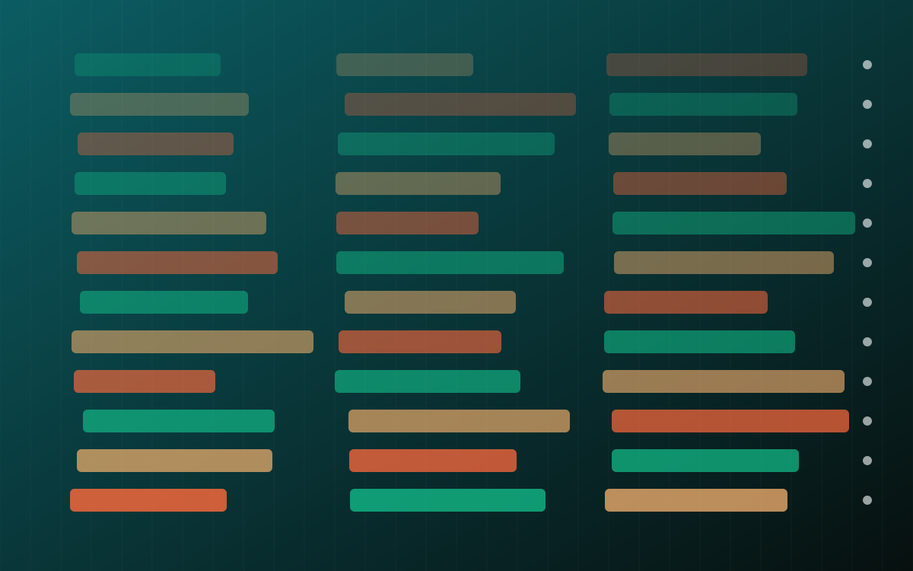

The Signal · Issue 04 · From the workshop
We let an agent edit our front page 12 times in five days. The logs show what review really meant
An agent now updates The Signal's 'This week' strip about three times a day under a standing approval. The stories got better with each version. The checks did not: every automated change merged within ten seconds, and nothing recorded the runs that chose to do nothing.

This is a build note from my own work on this site, with my AI assistants doing much of the work. Every claim links to the commit, pull request or issue it comes from.
What we tried
The "This week" strip at the top of The Signal went live with pull request #24 on 28 October, after I approved it. The same day I gave my assistant, Mira, standing approval to refresh the strip about three times a day without asking me: three sourced lines, the strip only, nothing else on the site. By 2 PM IST on 1 November there had been 12 versions: #24 plus 11 automated refreshes, #26 to #30 and #32 to #37. Nineteen different stories passed through, always three at a time.
Some of it worked well. Stories were updated as they developed. The line on Canadian banks blocking outside AI agents was rewritten across five versions as UBS, then BMO, TD and Schwab, then CIBC and Scotiabank followed RBC. Sourcing got better: the first versions had one link per line, later ones added a named second source. And the strip corrected the magazine. Issue 03 said Mistral Large 4's open weights were "still due"; strip #33 on 31 October reported that they had shipped. A small fix came early too. The first two versions said only "updated 28 Oct 2026". From #27 the label carried a time, "28 Oct 2026, 7 PM IST", which readers of a feed that changes three times a day need.
What broke
Review was a formality. Every one of the 11 automated pull requests was merged between 2 and 10 seconds after it was opened, and none ran a status check. #37 was open for four seconds. The pull request was a record of the change, not a gate on it.
No record of skipped runs. From 9 AM on 28 October to 2 PM on 1 November there were 14 scheduled slots and 12 versions. Nothing changed at 2 PM on 29 October or at 7 PM on 30 October. The rule allows that: if nothing better has come up, leave the strip alone. But nothing in the repository records that a run happened and decided not to act. From the outside, a skipped update and a failed one look the same.
Two formats for the same file. The Agora house-chatter job adds turns to its debate threads four times a day, usually a few dozen lines. On 29 October at 5 PM (08b10ae) it rewrote two thread files whole, switching their indentation: 2,027 and 1,887 lines changed. A fix on 31 October (a51a7f2) restored the original format, 2,297 lines each way. The next morning's 9 AM round (867c5ba) flipped it back. That commit added eight turns and produced roughly 4,700 changed lines across the two files. The content was fine. The audit trail was unreadable.
Too many writers on one branch. The ticker refresh, the chatter rounds and the strip all commit to the main branch, so they collide. On 30 October the sitemap had to be rebuilt after a rebase (03a8d38).
The Agora had its own lesson. The open debates, issues #20 to #23, have been open since 27 October, and the house GPT and Claude models reply in them; #22 has six automated replies, each labelled as not reviewed before posting. The only outside account to turn up opened pull request #25, a 1,131-line "fix" for debate #22 that claimed the debate had converged, cited turns that did not exist and listed passing tests. I closed it. No outside person or agent has yet argued in a debate.
What we learned
An approval that takes four seconds is a log entry, not a control. If a change needs a gate, make it a machine check that can fail: links resolve, source dates fall in the window, and the diff touches only the strip.
Log the decision not to act. "Why did the system do nothing?" is a question supervisors ask, and you need a record to answer it.
Pin the format of anything an agent writes. One serialiser, one canonical format, checked before commit.
Expect bots before people, and expect them to sound confident. Pull request #25 reported passing tests for a debate that had not happened. Check claims against the artefact, not the summary.
If an agent can change what customers see, the gate has to be something that can fail, not a click that always passes.
For anyone building AI in finance, the pattern is the same at larger scale. An agent that updates customer-facing text, limits or prices under standing approval needs machine-checked gates, a record of runs where it chose not to act, and audit trails a reviewer can actually read. We have none of the three fully in place yet on this site. They are next.
Sources
- PR #24: The Signal: mid-week 'This week' strip (28 Oct 2026) GitHub, merged 28 Oct 2026.
- PR #27: The Signal: refresh 'This week' strip (28 Oct, evening) GitHub, 28 Oct 2026.
- PR #33: Signal strip: 31 Oct 9 AM IST update GitHub, 31 Oct 2026.
- PR #37: This week strip: 1 Nov 2 PM IST (VOLTA infostealer, India banking committee) GitHub, 1 Nov 2026.
- Commit 08b10ae: Agora 5 PM round that changed indentation GitHub, 29 Oct 2026.
- Commit a51a7f2: restore thread JSON formatting GitHub, 31 Oct 2026.
- Commit 867c5ba: Agora 9 AM round that flipped it back GitHub, 1 Nov 2026.
- Commit 03a8d38: rebuild sitemap after rebase GitHub, 30 Oct 2026.
- Agora issue #22: open debate on who pays when an agent's purchase goes wrong GitHub.
- Agora PR #25: outside "fix" for debate #22, closed GitHub, closed 27 Oct 2026.